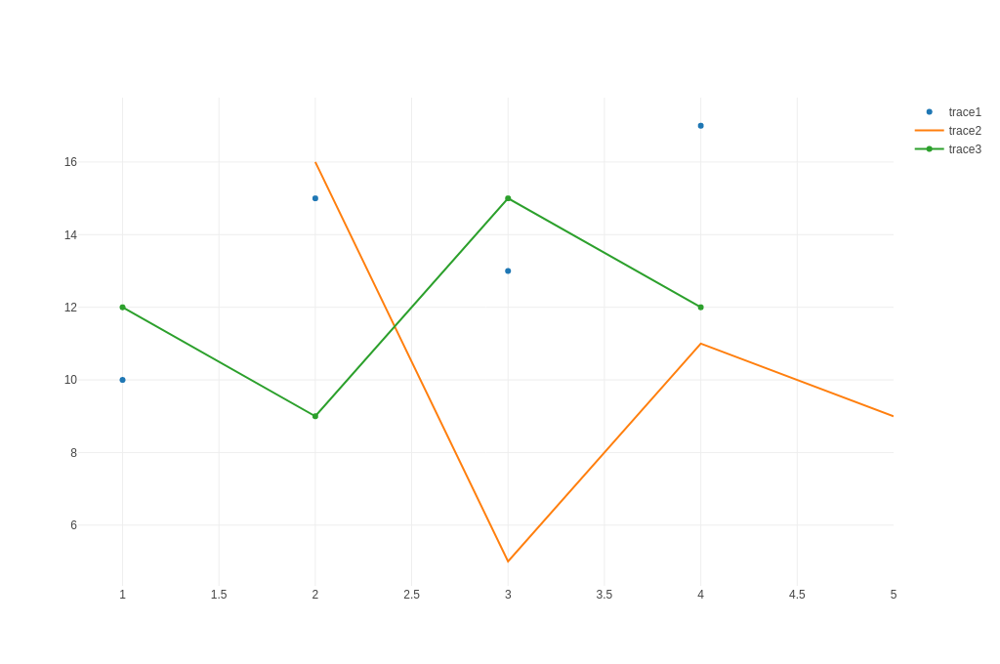

Getting Started
To start using plotly.rs in your project add the following to your Cargo.toml:
[dependencies]
plotly = "0.13"
Plotly.rs is ultimately a thin wrapper around the plotly.js library. The main job of this library is to provide structs and enums which get serialized to json and passed to the plotly.js library to actually do the heavy lifting. As such, if you are familiar with plotly.js or its derivatives (e.g. the equivalent Python library), then you should find plotly.rs intuitive to use.
A Plot struct contains one or more Trace objects which describe the structure of data to be displayed. Optional Layout and Configuration structs can be used to specify the layout and config of the plot, respectively.
The builder pattern is used extensively throughout the library, which means you only need to specify the attributes and details you desire. Any attributes that are not set will fall back to the default value used by plotly.js.
All available traces (e.g. Scatter, Bar, Histogram, etc), the Layout, Configuration and Plot have been hoisted in the plotly namespace so that they can be imported simply using the following:
#![allow(unused)] fn main() { use plotly::{Plot, Layout, Scatter}; }
The aforementioned components can be combined to produce as simple plot as follows:
use plotly::common::Mode; use plotly::{Plot, Scatter}; fn line_and_scatter_plot() { let trace1 = Scatter::new(vec![1, 2, 3, 4], vec![10, 15, 13, 17]) .name("trace1") .mode(Mode::Markers); let trace2 = Scatter::new(vec![2, 3, 4, 5], vec![16, 5, 11, 9]) .name("trace2") .mode(Mode::Lines); let trace3 = Scatter::new(vec![1, 2, 3, 4], vec![12, 9, 15, 12]).name("trace3"); let mut plot = Plot::new(); plot.add_trace(trace1); plot.add_trace(trace2); plot.add_trace(trace3); plot.show(); } fn main() -> std::io::Result<()> { line_and_scatter_plot(); Ok(()) }
which results in the following figure (displayed here as a static png file):

The above code will generate an interactive html page of the Plot and display it in the default browser. The html for the plot is stored in the platform specific temporary directory. To save the html result, you can do so quite simply:
#![allow(unused)] fn main() { plot.write_html("/home/user/line_and_scatter_plot.html"); }
It is often the case that plots are produced to be included in a document and a different format for the plot is desirable (e.g. png, jpeg, etc). Given that the html version of the plot is composed of vector graphics, the display when converted to a non-vector format (e.g. png) is not guaranteed to be identical to the one displayed in html. This means that some fine tuning may be required to get to the desired output. To support that iterative workflow, Plot has a show_image() method which will display the rasterised output to the target format, for example:
#![allow(unused)] fn main() { plot.show_image(ImageFormat::PNG, 1280, 900); }
will display in the browser the rasterised plot; 1280 pixels wide and 900 pixels tall, in png format.
Once a satisfactory result is achieved, and assuming the kaleido feature is enabled, the plot can be saved using the following:
#![allow(unused)] fn main() { plot.write_image("/home/user/plot_name.ext", ImageFormat::PNG, 1280, 900, 1.0); }
The extension in the file-name path is optional as the appropriate extension (ImageFormat::PNG) will be included. Note that in all functions that save files to disk, both relative and absolute paths are supported.
Saving Plots with Kaleido (legacy)
To add the ability to save plots in the following formats: png, jpeg, webp, svg, pdf and eps, you can use the kaleido feature. This feature depends on plotly/Kaleido: a cross-platform open source library for generating static images. All the necessary binaries have been included with plotly_kaleido for Linux, Windows and MacOS. Previous versions of plotly.rs used the orca feature, however, this has been deprecated as it provided the same functionality but required additional installation steps. To enable the kaleido feature add the following to your Cargo.toml:
[dependencies]
plotly = { version = "0.13", features = ["kaleido"] }
Static Image Export with WebDriver (recommended)
For static image export using WebDriver and headless browsers, you can use the plotly_static feature. This feature supports the same formats as Kaleido (png, jpeg, webp, svg, pdf) but uses WebDriver for the static export process. To enable static export, add the following to your Cargo.toml:
[dependencies]
plotly = { version = "0.13", features = ["static_export_default"] }
The static_export_default feature includes Chrome WebDriver support with automatic download. For Firefox support, use static_export_geckodriver instead. See the Static Image Export chapter for a detailed usage example.
WebAssembly Support
As of v0.8.0, plotly.rs can now be used in a Wasm environment by enabling the wasm feature in your Cargo.toml:
[dependencies]
plotly = { version = ">=0.8.0" features = ["wasm"] }
The wasm feature exposes rudimentary bindings to the plotly.js library, which can then be used in a wasm environment such as the Yew frontend framework.
To make a very simple Plot component might look something like:
#![allow(unused)] fn main() { use yew::prelude::*; #[derive(Properties, PartialEq)] pub struct PlotProps { pub id: String, pub plot: plotly::Plot, pub class: Option<Classes>, } #[function_component(Plot)] pub fn plot(props: &PlotProps) -> Html { let PlotProps { id, plot, class } = props; let p = yew_hooks::use_async::<_, _, ()>({ let id = id.clone(); let plot = plot.clone(); async move { plotly::bindings::new_plot(&id, &plot).await; Ok(()) } }); { let id = id.clone(); let plot = plot.clone(); use_effect_with_deps( move |(_, _)| { p.run(); || () }, (id, plot), ); } html! { <div id={id.clone()} class={class.clone()}></div> } } }